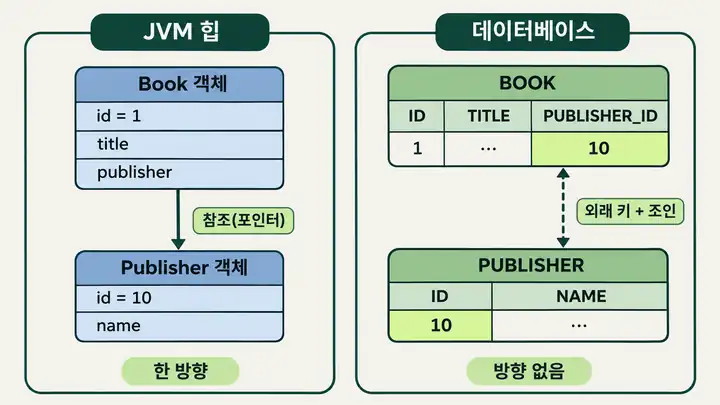
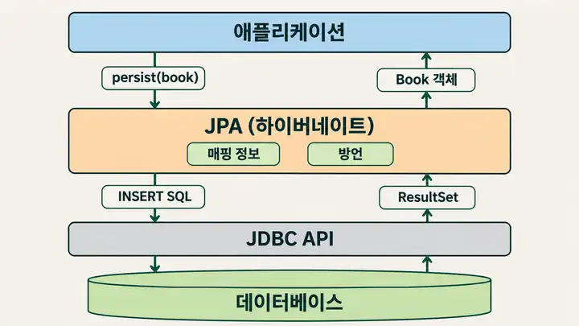
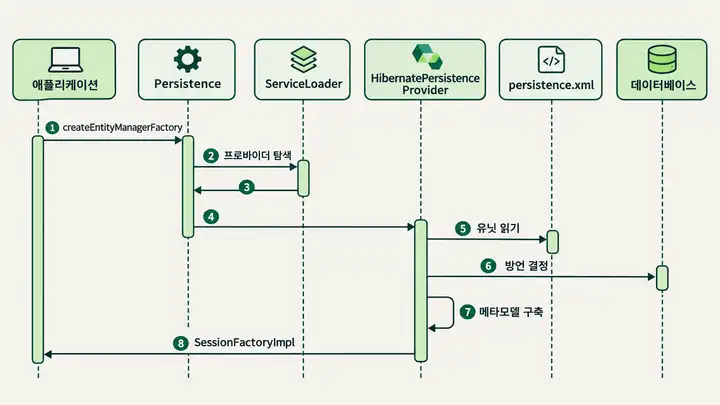

JPA 기본편 / 01회
JPA 소개와 시작하기
JDBC로 객체를 저장할 때 왜 같은 코드가 반복되고 객체 모델이 무너지는지에서 출발해, JPA 표준과 하이버네이트가 JDBC 위 어디에서 SQL을 만들고 부트스트랩되는지를 실행 로그와 스택 트레이스로 따라간다.
오늘 끝나면 할 수 있는 것
- 객체 모델과 테이블 모델 사이의 네 가지 불일치(상속, 연관관계, 객체 그래프 탐색, 비교)를 JVM 힙의 참조와 외래 키·조인의 차이로 설명하고, JDBC 코드에서 그 불일치가 어떤 반복 코드로 나타나는지 예를 들 수 있다.
- JPA가 명세(인터페이스 묶음)이고 하이버네이트가 그 구현이라는 관계를,
EntityManagerFactory의 실제 클래스와 JPQL 실행 스택 트레이스에서 JDBCPreparedStatement가 호출되는 지점을 근거로 보여 줄 수 있다. persistence.xml의 각 설정을 표준 속성과 하이버네이트 전용 속성으로 나누고, 방언(Dialect) 자동 감지와 엔티티 클래스 등록·스캔 규칙을 실행 결과로 설명할 수 있다.Persistence.createEntityManagerFactory한 줄에서 일어나는 부트스트랩 순서(프로바이더 탐색, 설정 파일 탐색, 커넥션과 방언 결정, 메타모델 구축, 스키마 생성)를 로그 순서와 맞춰 말할 수 있다.EntityManagerFactory와EntityManager의 수명·스레드 규칙을 지키는 CRUD 코드를 쓰고, 실행 로그에서 INSERT·SELECT·UPDATE·DELETE가 각각 언제 나가는지 예측할 수 있다.
핵심 강의 → 핵심 요약 → 실무 재판단 → 적용 연습 → 이해 확인
01 핵심 강의
이 강의의 차례 · 소제목 14개
- 이 회차의 질문: 객체를 데이터베이스에 "저장한다"는 말의 무게
- SQL 중심 개발: 같은 일을 객체 수만큼 반복한다
- 패러다임 불일치 1: 상속
- 패러다임 불일치 2: 연관관계는 참조이고, 테이블은 외래 키다
- 패러다임 불일치 3: 객체 그래프를 어디까지 탐색할 수 있는가
- 패러다임 불일치 4: 비교, 같은 행에서 만든 두 객체는 같은가
- JPA는 무엇인가: 표준 명세와 구현체
- JPA는 어디에서 동작하는가: JDBC 위의 한 층
- 왜 JPA를 쓰는가: 얻는 것과 얻지 못하는 것
- Hello JPA 1: 프로젝트 구성과 persistence.xml
- 방언: 같은 JPQL, 다른 SQL
- Hello JPA 2: Persistence.createEntityManagerFactory 한 줄에서 일어나는 일
- Hello JPA 3: 엔티티와 CRUD, 그리고 SQL이 나가는 시점
- 흔한 함정: 실험으로 확인한 네 가지
이 회차의 질문: 객체를 데이터베이스에 "저장한다"는 말의 무게
자바 프로그램이 다루는 데이터는 JVM 힙(heap)에 놓인 객체들이다. 객체는 필드를 갖고, 필드는 기본형 값이거나 다른 객체를 가리키는 참조다. 프로그램이 끝나면 힙은 사라지므로, 오래 남겨야 하는 데이터는 어딘가에 저장해야 한다. 현실의 선택지는 대부분 관계형 데이터베이스(relational database)다. 문제는 관계형 데이터베이스가 객체를 모른다는 데 있다. 데이터베이스가 아는 것은 테이블, 행, 컬럼, 기본 키와 외래 키, 그리고 그것을 다루는 SQL뿐이다.
그래서 "객체를 저장한다"는 말은 실제로는 번역 작업이다. 힙에 있는 객체를 쪼개 INSERT 문의 파라미터로 바꾸고, 반대로 SELECT 결과의 행과 컬럼을 모아 다시 객체를 조립한다. 앞선 권(스프링 DB 1편·2편)에서 JDBC, JdbcTemplate, MyBatis로 이 번역을 직접 해 봤고, JPA 활용 1편에서는 스프링 부트 위에서 JPA로 애플리케이션을 만들어 봤다. 이번 권은 방향을 바꿔 스프링을 걷어 내고 JPA 그 자체를 본다. 스프링 없이 JPA를 띄우면, 스프링 부트가 대신 해 주던 일(설정 파일 읽기, 커넥션 준비, 트랜잭션 시작과 종료)이 코드에 그대로 드러나기 때문이다.
이번 권은 열 개의 회차로 되어 있다. 이 회차가 JPA가 왜 필요한지와 가장 작은 JPA 애플리케이션을 다루고, 02회가 영속성 컨텍스트의 내부 동작(1차 캐시, 쓰기 지연, 변경 감지, 플러시)을, 03회가 엔티티와 테이블 매핑과 기본 키 생성 전략을, 04·05회가 연관관계 매핑을, 06회가 상속 매핑을, 07회가 프록시와 지연 로딩을, 08회가 값 타입을, 09·10회가 JPQL을 다룬다. 이 회차에서 잠깐 보이는 동작들(커밋 때 INSERT가 나가는 것, 같은 엔티티를 두 번 조회해도 SELECT가 한 번인 것)은 02회에서 바닥까지 판다. 여기서는 "그런 일이 실제로 일어난다"는 것을 로그로 확인하는 데서 멈춘다.
이 회차의 모든 실행 결과는 직접 돌려 얻었다. 환경은 JDK 21.0.13(Temurin), 하이버네이트 ORM 6.6.53.Final, Jakarta Persistence API 3.1.0, H2 2.3.232이다. 빌드 도구 없이 javac와 java로 클래스패스를 직접 구성해 돌렸으므로, 스프링 부트도 커넥션 풀 라이브러리도 끼어 있지 않다. 예제 도메인은 이 회차를 위해 새로 만든 도서(Book) 엔티티 하나다.
SQL 중심 개발: 같은 일을 객체 수만큼 반복한다
JDBC로 도서를 저장하고 조회하는 코드를 떠올려 보자. 저장할 때는 SQL 문자열을 쓰고, PreparedStatement를 얻고, 객체의 게터를 하나씩 불러 파라미터 자리에 넣는다. 조회할 때는 SQL을 실행해 ResultSet을 받고, 컬럼을 하나씩 꺼내 생성자나 세터로 객체를 채운다. 아래는 조회 쪽만 쓴 예다.
static Book findById(Connection con, long id) throws SQLException {
try (PreparedStatement ps = con.prepareStatement(
"select id, title, price from book where id = ?")) {
ps.setLong(1, id);
try (ResultSet rs = ps.executeQuery()) {
if (!rs.next()) return null;
return new Book(rs.getLong("id"), rs.getString("title"), rs.getInt("price"));
}
}
}이 코드에서 도메인에 관한 정보는 "도서는 id, title, price를 갖는다"는 한 가지뿐인데, 그 정보가 세 군데에 흩어져 있다. SQL 문자열의 컬럼 목록, rs.getXxx 호출들, 그리고 Book 클래스의 필드다. 저장, 수정, 삭제, 목록 조회 메서드에도 같은 정보가 반복된다. 도메인 객체가 열 개면 이 작업도 열 번 반복된다. 스프링 DB 2편의 JdbcTemplate이나 MyBatis는 커넥션과 예외 처리 같은 공통 부분을 덜어 주었지만, "어떤 컬럼을 어떤 필드에 넣는가"라는 번역 자체는 여전히 개발자가 쓴다.
요구 사항이 바뀌면 문제가 더 분명해진다. 도서에 출판일(publishedAt) 필드를 추가한다고 하자. 클래스에 필드를 하나 추가하는 것으로 끝나지 않는다. INSERT 문에 컬럼과 파라미터를 추가하고, 모든 SELECT 문의 컬럼 목록에 추가하고, 매핑 코드에 rs.getObject("published_at", LocalDate.class)를 추가하고, UPDATE 문에도 추가해야 한다. 하나라도 빠뜨리면 컴파일러는 아무 말도 하지 않는다. SQL은 자바 컴파일러 입장에서 그냥 문자열이기 때문이다. 오타 하나, 빠진 컬럼 하나는 그 SQL이 실제로 실행되는 순간에야 SQLException으로, 더 나쁘게는 조용히 비어 있는 필드로 드러난다.
더 미묘한 문제는 계층 사이의 신뢰다. 서비스 계층이 DAO(Data Access Object)에서 Book을 받았을 때, 그 객체의 어느 필드가 채워져 있는지는 DAO가 실행한 SQL이 정한다. 도서와 출판사를 조인했다면 book.getPublisher()가 채워져 있고, 조인하지 않았다면 null이다. 서비스 코드만 봐서는 알 수 없고, DAO의 SQL을 열어 봐야 안다. 물리적으로는 계층을 나눴지만 논리적으로는 서비스 계층이 DAO의 SQL에 묶여 있는 셈이다. 결국 "객체를 다룬다"고 생각하며 코드를 쓰지만 실제로는 SQL에 맞춰 객체 모양을 정하게 된다. 이것을 흔히 SQL 중심적인 개발이라고 부른다.
패러다임 불일치 1: 상속
객체 지향과 관계형 모델은 서로 다른 목표에서 출발했다. 객체 지향은 데이터와 그 데이터를 다루는 동작을 함께 묶고, 상속·다형성·캡슐화로 복잡성을 관리한다. 관계형 모델은 데이터를 중복 없이 정규화된 표로 나누고, 집합 연산으로 질의한다. 두 모델이 데이터를 바라보는 방식이 달라서 생기는 간극을 패러다임 불일치(object-relational impedance mismatch)라고 한다. 이 간극은 네 군데에서 가장 뚜렷하게 드러난다. 상속, 연관관계, 객체 그래프 탐색, 그리고 비교다.
먼저 상속이다. 결제(Payment)라는 추상 클래스 아래에 카드 결제(CardPayment)와 계좌 이체(BankTransferPayment)가 있다고 하자. 공통 필드(금액, 결제 시각)는 부모에, 고유 필드(카드 번호 끝자리, 은행 코드)는 자식에 있다. 자바에서는 Payment p = new CardPayment(...)처럼 부모 타입으로 다루면서 실제 객체의 메서드가 호출되는 다형성을 공짜로 얻는다.
테이블에는 상속이라는 개념이 없다. 가장 가까운 모델링 기법은 슈퍼타입·서브타입 관계다. 공통 컬럼을 PAYMENT 테이블에, 고유 컬럼을 CARD_PAYMENT와 BANK_TRANSFER_PAYMENT 테이블에 두고, 자식 테이블의 기본 키가 부모 테이블의 기본 키를 외래 키로 참조하게 한다. 그리고 부모 테이블에 "이 행이 어느 자식인지"를 나타내는 구분 컬럼을 둔다.
객체 모델 테이블 모델(슈퍼타입-서브타입)
Payment (abstract) PAYMENT
- amount ID (PK) | AMOUNT | PAID_AT | DTYPE
- paidAt ▲ ▲
▲ ▲ │ PK = FK │ PK = FK
│ │ CARD_PAYMENT BANK_TRANSFER_PAYMENT
CardPayment BankTransferPayment ID (PK,FK) | LAST4 ID (PK,FK) | BANK_CODE
- last4 - bankCode
이제 카드 결제 하나를 저장하려면 SQL이 두 개 필요하다. PAYMENT에 공통 컬럼과 구분 값 'CARD'를 넣는 INSERT, 그리고 CARD_PAYMENT에 같은 ID와 고유 컬럼을 넣는 INSERT다. 조회할 때는 두 테이블을 조인하고, 구분 컬럼을 보고 어떤 자식 클래스의 인스턴스를 만들지 결정하는 코드를 써야 한다. "결제 전체를 조회해 다형적으로 다루기"는 모든 자식 테이블을 외부 조인하고 행마다 분기하는 코드가 된다. 자바 컬렉션에 넣을 때는 list.add(cardPayment) 한 줄이던 일이 두 개의 INSERT와 분기 로직으로 불어난다. JPA는 이 번역을 상속 매핑 전략으로 대신하는데, 전략마다 테이블 구조와 SQL이 어떻게 달라지는지는 06회에서 다룬다.
패러다임 불일치 2: 연관관계는 참조이고, 테이블은 외래 키다
객체는 다른 객체를 참조(reference)로 가리킨다. JLS(Java Language Specification) §4.3.1은 참조 값(reference value)을 객체를 가리키는 포인터라고 정의한다. 도서가 출판사를 가진다면 Book 객체의 publisher 필드에는 힙 어딘가에 있는 Publisher 객체를 가리키는 참조가 들어 있다. 이 참조를 따라가는 비용은 메모리 접근 한 번이고, 따라갈 수 있는 방향은 참조가 있는 쪽뿐이다. Book에서 Publisher로는 갈 수 있지만, Publisher에 도서 목록 필드를 따로 두지 않는 한 반대 방향으로는 갈 수 없다.
테이블은 연관관계를 외래 키(foreign key)라는 값으로 표현한다. BOOK 테이블의 PUBLISHER_ID 컬럼에는 출판사 행의 기본 키 값이 들어 있다. 이것은 포인터가 아니라 그냥 숫자다. 이 숫자로 상대 행을 찾으려면 조인(join)을 해야 하고, 조인은 방향이 없다. BOOK JOIN PUBLISHER ON BOOK.PUBLISHER_ID = PUBLISHER.ID로 도서에서 출판사를 찾을 수 있고, 똑같은 조건으로 출판사에서 도서들을 찾을 수도 있다. 외래 키 하나가 양방향을 모두 표현한다.
JVM 힙 데이터베이스
Book 객체 BOOK
┌───────────────────────┐ ID | TITLE | PUBLISHER_ID
│ id = 1 │ ---+----------------+-------------
│ title = "객체와 테이블"│ 1 | 객체와 테이블 | 10
│ publisher = ●─────────┼──┐ │ (값)
└───────────────────────┘ │ (참조: 포인터) ▼ 조인 조건으로 찾는다
▼ PUBLISHER
Publisher 객체 ID | NAME
┌─────────────────┐ ---+------------
│ id = 10 │ 10 | 가나출판
│ name = "가나출판" │
└─────────────────┘
방향: Book → Publisher 한쪽만 방향: 없음(조인은 양쪽 모두 가능)
그래서 객체 모델을 그대로 지키려 하면 번역 코드가 생긴다. 저장할 때는 book.getPublisher().getId()를 꺼내 PUBLISHER_ID 파라미터에 넣어야 한다. 조회할 때는 두 테이블을 조인한 결과 한 행에서 도서 컬럼으로 Book을, 출판사 컬럼으로 Publisher를 만든 뒤 book.setPublisher(publisher)로 연결해야 한다. 이 번거로움을 피하려고 Book에 아예 Long publisherId 필드를 두는 경우가 많다. 그러면 SQL은 쉬워지지만, 객체에서 출판사로 가려면 다시 DAO를 불러야 하므로 객체 모델이 테이블 모델로 끌려 내려간다. JPA에서 "외래 키를 누가 관리하는가"라는 연관관계의 주인 개념은 바로 이 비대칭(객체는 참조가 둘, 테이블은 외래 키가 하나)에서 나온다. 04회의 주제다.

패러다임 불일치 3: 객체 그래프를 어디까지 탐색할 수 있는가
객체는 참조를 따라 마음대로 이동할 수 있어야 한다. 도서에서 출판사로, 출판사에서 담당자로, 담당자에서 연락처로 book.getPublisher().getManager().getContact()처럼 이어지는 것을 객체 그래프 탐색(object graph navigation)이라고 한다. 힙 위의 객체라면 이 탐색은 언제나 가능하다. 참조가 null이 아닌 한 그 끝에는 반드시 객체가 있다.
SQL로 객체를 채우는 방식에서는 탐색할 수 있는 범위가 처음 실행한 SQL에서 정해진다. 도서와 출판사만 조인해 객체를 만들었다면 book.getPublisher()까지는 되지만 getManager()는 null이다. 그렇다고 처음부터 연결된 모든 테이블을 조인하면 쓰지도 않을 데이터를 매번 대량으로 읽는다. 결국 DAO에 findBook, findBookWithPublisher, findBookWithPublisherAndManager처럼 탐색 범위별 메서드가 늘어나고, 앞에서 본 계층 간 신뢰 문제가 다시 나타난다.
JPA는 이 문제를 "실제로 참조를 따라가는 순간에 필요한 SQL을 실행한다"는 방식으로 푼다. 연관된 객체 자리에 진짜 객체 대신 프록시(proxy)라는 대리 객체를 두고, 프록시의 메서드가 처음 호출될 때 SELECT를 실행해 진짜 데이터를 채운다. 이것을 지연 로딩(lazy loading)이라고 한다. 반대로 함께 쓸 것이 확실하면 처음부터 조인해서 가져오는 즉시 로딩(eager loading)도 고를 수 있다. 프록시가 바이트코드 수준에서 어떻게 만들어지고, 지연 로딩이 왜 N+1 문제로 이어지는지는 07회에서 다룬다. 지금은 "탐색 범위를 SQL이 아니라 실행 시점의 접근이 정하게 바꾼다"는 아이디어만 잡아 두면 된다.
패러다임 불일치 4: 비교, 같은 행에서 만든 두 객체는 같은가
자바에서 두 참조를 ==로 비교하면 같은 객체를 가리키는지(동일성, identity)를 따진다(JLS §15.21.3). 값이 같은지(동등성, equality)는 equals()로 따진다. 컬렉션에서 같은 원소를 두 번 꺼내면 같은 객체가 나오므로 list.get(0) == list.get(0)은 언제나 참이다. 데이터베이스에서 행의 정체성은 기본 키가 정한다. 같은 기본 키를 가진 행은 같은 행이다.
그렇다면 JDBC로 같은 기본 키의 행을 두 번 조회해 만든 두 객체는 같을까? 위의 findById를 두 번 부르는 실험을 해 보자.
Book a = findById(con, 1L);
Book b = findById(con, 1L);
System.out.println("a == b : " + (a == b));
System.out.println("same values : " + (a.id == b.id && a.title.equals(b.title)));a == b : false
same values : true결과는 당연하다. findById는 호출될 때마다 new Book(...)을 실행하므로 힙에 객체가 두 개 생긴다. 값은 같지만 서로 다른 객체다. 데이터베이스에서는 한 행인데 메모리에서는 두 객체가 되는 것이다. 이 차이는 실제 버그로 이어진다. 한 객체의 가격을 바꾸고 다른 객체를 저장하면 변경이 사라진다. 두 객체를 HashSet에 넣으면 equals와 hashCode를 재정의하지 않은 한 두 원소로 들어간다. 같은 행을 가리키는 객체가 여러 개 떠다니면 "어느 쪽이 최신 상태인가"를 개발자가 추적해야 한다.
JPA 명세는 이 문제에 대해 분명한 규칙을 정한다. 영속성 컨텍스트(persistence context) 안에서는 하나의 영속 엔티티 식별자에 대해 엔티티 인스턴스가 하나뿐이다. 명세 §3.1의 표현으로는 "for any persistent entity identity there is a unique entity instance"다. 같은 EntityManager로 같은 기본 키의 엔티티를 두 번 조회하면 같은 인스턴스가 돌아오고, 두 번째 조회는 데이터베이스까지 가지 않는다. 뒤에서 실제 로그로 확인한다. 이 보장이 성립하는 범위(같은 영속성 컨텍스트 안)와 성립하지 않는 범위(서로 다른 EntityManager 사이)를 정확히 구분하는 것이 02회의 출발점이다.
JPA는 무엇인가: 표준 명세와 구현체
ORM(Object-Relational Mapping)은 객체와 관계형 데이터베이스 사이의 번역을 프레임워크가 대신하는 기술을 통칭한다. 개발자는 객체 모델을 설계하고 "이 클래스는 이 테이블, 이 필드는 이 컬럼"이라는 매핑 정보를 주며, 프레임워크가 그 정보를 보고 SQL을 만들고 결과를 객체로 조립한다. JPA는 자바 진영의 ORM 표준이다. 원래 이름은 Java Persistence API였고, 지금 이름은 Jakarta Persistence다.
중요한 점은 JPA가 라이브러리가 아니라 명세(specification)라는 것이다. jakarta.persistence-api jar를 열어 보면 EntityManager, EntityManagerFactory, EntityTransaction 같은 인터페이스와 @Entity, @Id 같은 애너테이션, 그리고 부트스트랩용 Persistence 클래스 정도만 있다. SQL을 만드는 코드, 커넥션을 다루는 코드는 한 줄도 없다. 그 일은 명세를 구현한 영속성 프로바이더(persistence provider)가 한다. 하이버네이트(Hibernate)와 이클립스링크(EclipseLink)가 대표적인 구현체다. 애플리케이션 코드는 표준 인터페이스에만 의존하고, 실행 시점에 어떤 구현체가 클래스패스에 있느냐에 따라 실제 동작하는 코드가 정해진다. JDBC가 java.sql.Connection 인터페이스와 데이터베이스별 드라이버로 나뉘는 구조와 같다.
실제로 이 회차의 실험에서 Persistence.createEntityManagerFactory가 돌려준 객체와 거기서 얻은 EntityManager의 클래스를 출력하면 다음과 같다.
emf class = org.hibernate.internal.SessionFactoryImpl
em class = org.hibernate.internal.SessionImpl코드에는 EntityManagerFactory와 EntityManager라는 표준 타입만 썼지만 실제 객체는 하이버네이트의 SessionFactoryImpl과 SessionImpl이다. javap로 하이버네이트의 인터페이스를 보면 org.hibernate.SessionFactory가 jakarta.persistence.EntityManagerFactory를, org.hibernate.Session이 jakarta.persistence.EntityManager를 상속한다. 하이버네이트 사용자 가이드도 EntityManagerFactory를 SessionFactory의 Jakarta Persistence 대응물로, Session을 EntityManager로 표현되는 객체로 설명한다. 표준 인터페이스 위에 하이버네이트 고유 기능을 더한 확장이 얹혀 있고, 필요하면 emf.unwrap(SessionFactory.class)처럼 꺼내 쓸 수 있다.
명세의 역사를 간단히 짚어 두면 버전 번호와 패키지 이름이 왜 그런지 이해된다. 아래 표의 날짜는 JCP(Java Community Process)와 Eclipse Foundation의 명세 페이지에서 확인한 것이다.
| 버전 | 근거가 된 명세 과정 | 시기와 플랫폼 | 패키지 |
|---|---|---|---|
| 1.0 | JSR 220(Enterprise JavaBeans 3.0)의 일부 | 최종 릴리스 2006년 5월 | javax.persistence |
| 2.0 | JSR 317(Java Persistence 2.0) | 최종 릴리스 2009년 12월 | javax.persistence |
| 2.1 / 2.2 | JSR 338 | 2.1 최종 릴리스 2013년 5월, 2.2 유지보수 릴리스 2017년 | javax.persistence |
| 3.0 | Jakarta EE 명세 과정 | Jakarta EE 9용(명세 위원회 투표 2020년 10월 완료) | jakarta.persistence |
| 3.1 / 3.2 | Jakarta EE 명세 과정 | 3.1은 Jakarta EE 10용, 3.2는 Jakarta EE 11용 | jakarta.persistence |
3.0에서 바뀐 것은 기능이 아니라 이름이다. 자바 EE가 Eclipse Foundation으로 옮겨 가 Jakarta EE가 되면서 패키지가 javax.persistence에서 jakarta.persistence로, 설정 속성의 접두어가 javax.persistence.에서 jakarta.persistence.로 바뀌었다. 자바에서 애너테이션은 완전한 이름(fully qualified name)으로 구별되는 타입이므로, javax.persistence.Entity와 jakarta.persistence.Entity는 이름만 비슷한 별개의 타입이다. 이 권의 기준인 하이버네이트 6.6은 Jakarta Persistence 3.1을 구현하고 자바 11 이상에서 동작한다(하이버네이트 ORM 릴리스 페이지의 호환성 표 기준). 스프링 부트 3.x가 jakarta.*를 쓰는 것도 같은 이유다.
JPA는 어디에서 동작하는가: JDBC 위의 한 층
JPA를 쓴다고 JDBC가 사라지는 것은 아니다. JPA 구현체는 애플리케이션과 JDBC 사이에 있는 한 층이다. 애플리케이션이 em.persist(book)를 부르면 하이버네이트는 Book 클래스의 매핑 정보를 보고 INSERT 문을 만들고, 엔티티에서 값을 꺼내 파라미터로 묶은 뒤, JDBC의 PreparedStatement로 실행한다. 조회는 반대 방향이다. SELECT 문을 만들어 실행하고, 돌아온 ResultSet의 컬럼을 읽어 엔티티 인스턴스를 만들고 필드를 채운다. 앞의 JDBC 코드에서 개발자가 손으로 하던 일을 그대로 하되, 매핑 정보를 근거로 자동으로 할 뿐이다.
- 애플리케이션표준 인터페이스
EntityManager의persist를 호출한다. SQL은 쓰지 않는다. - JPA 구현체(하이버네이트)엔티티 클래스의 매핑 메타데이터를 보고 INSERT 문과 파라미터 바인딩 순서를 정한다. 방언이 데이터베이스별 SQL 문법을 정한다.
- JDBC API
Connection.prepareStatement로 문장을 준비하고 파라미터를 바인딩해 실행한다. 로그의?는 이 바인딩 자리다. - JDBC 드라이버와 데이터베이스드라이버가 SQL을 네트워크 프로토콜(또는 H2 같은 내장 DB라면 같은 프로세스 안의 호출)로 전달하고, DB가 파싱·실행한 결과를 돌려준다.
이 경로는 스택 트레이스로 직접 볼 수 있다. 뒤의 방언 실험에서 H2에 MySQL용 방언을 지정했더니 테이블 생성 DDL이 H2 문법에 맞지 않아 실패했고, 그 상태에서 JPQL 쿼리를 실행하자 "테이블이 없다"는 예외가 올라오면서 호출 경로가 고스란히 찍혔다. 아래는 실제로 받은 스택 트레이스에서 프레임 몇 개를 골라 아래(먼저 호출된 쪽)부터 위로 정리한 것이다. 줄 번호는 하이버네이트 6.6.53.Final, H2 2.3.232 기준이다.
hello.DialectDemo.main ← 애플리케이션: query.getResultList()
org.hibernate.query.spi.AbstractSelectionQuery.list ← 하이버네이트: 쿼리 객체
org.hibernate.query.sqm.internal.QuerySqmImpl.doList
org.hibernate.sql.exec.spi.JdbcSelectExecutor.list ← 하이버네이트: SQL 실행기
org.hibernate.sql.results.jdbc.internal.DeferredResultSetAccess.executeQuery
org.hibernate.sql.exec.internal.StandardStatementCreator.createStatement
org.hibernate.engine.jdbc.internal.StatementPreparerImpl.prepareQueryStatement
org.hibernate.engine.jdbc.internal.StatementPreparerImpl$4.doPrepare
org.h2.jdbc.JdbcConnection.prepareStatement ← JDBC 드라이버(java.sql.Connection 구현)
org.h2.jdbc.JdbcPreparedStatement.<init>
org.h2.engine.SessionLocal.prepareCommand ← H2 엔진: SQL 파싱하이버네이트의 StatementPreparerImpl이 호출하는 대상은 H2의 JdbcConnection.prepareStatement, 즉 java.sql.Connection 인터페이스의 구현이다. JPA 구현체 역시 결국 JDBC 표준 API를 부르는 클라이언트라는 뜻이다. 예외 쪽도 흥미롭다. 맨 아래에서 H2가 던진 것은 org.h2.jdbc.JdbcSQLSyntaxErrorException(JDBC의 SQLException 계열)인데, 애플리케이션이 받은 것은 org.hibernate.exception.SQLGrammarException이었고 원래 예외는 그 원인(cause)으로 들어 있었다. 하이버네이트의 SqlExceptionHelper와 StandardSQLExceptionConverter가 검사 예외인 SQLException을 자신의 런타임 예외 계층으로 변환한 것이다. 스프링 DB 1편에서 본 예외 추상화(SQLException을 데이터 접근 예외로 바꾸는 것)와 같은 발상이 JPA 구현체 안에도 들어 있다.

왜 JPA를 쓰는가: 얻는 것과 얻지 못하는 것
JPA를 쓰면 저장·조회·삭제는 persist, find, remove 메서드 호출이 된다. 수정에는 아예 전용 메서드가 없다. EntityManager 인터페이스에는 update라는 메서드가 존재하지 않는다. 트랜잭션 안에서 조회한 엔티티의 필드 값을 바꾸면 커밋 시점에 구현체가 변경을 감지해 UPDATE 문을 만든다. 자바 컬렉션에서 꺼낸 객체의 값을 바꾸면 컬렉션 안의 객체도 바뀌어 있는 것과 같은 감각으로 데이터베이스를 다루도록 설계한 것이다. 이것이 생산성 측면의 이점이다.
유지보수 측면에서는 앞에서 본 "필드 하나 추가하면 SQL 네 군데를 고쳐야 하는" 문제가 줄어든다. 엔티티에 필드를 추가하면 구현체가 매핑 메타데이터를 다시 만들고, INSERT·SELECT·UPDATE 문에 그 컬럼을 넣는다. 실제로 뒤의 실행 로그에서 하이버네이트가 만든 UPDATE 문은 바뀐 필드만이 아니라 매핑된 모든 컬럼(price=?, title=?)을 갱신했다. 매핑 정보에서 문장을 기계적으로 만들기 때문에 필드를 추가하면 문장에도 자동으로 들어간다. 바뀐 컬럼만 갱신하도록 바꾸는 하이버네이트 전용 애너테이션(@DynamicUpdate)도 있지만 기본 동작은 이렇다.
패러다임 불일치의 네 지점은 각각 JPA의 기능에 대응한다. 상속은 상속 매핑 전략(06회)이, 연관관계는 참조를 외래 키로 번역하는 연관관계 매핑(04·05회)이, 객체 그래프 탐색은 프록시와 지연 로딩(07회)이, 비교는 영속성 컨텍스트의 동일성 보장(02회)이 맡는다. 이번 권의 목차가 사실상 "불일치를 하나씩 메우는 순서"인 셈이다.
JPA라는 층이 하나 끼면 느려지지 않느냐는 질문도 자연스럽다. 층이 있다는 것은 반대로 애플리케이션과 데이터베이스 사이에서 무언가를 할 자리가 생긴다는 뜻이기도 하다. 대표적인 것이 세 가지다. 첫째, 같은 영속성 컨텍스트 안에서 같은 엔티티를 다시 조회하면 SQL을 보내지 않고 이미 가진 인스턴스를 돌려준다(1차 캐시와 동일성 보장). 둘째, persist를 호출할 때마다 INSERT를 보내지 않고 모아 두었다가 플러시 시점에 보낸다(트랜잭션을 지원하는 쓰기 지연). 이렇게 모아 두면 하이버네이트의 hibernate.jdbc.batch_size 설정과 함께 JDBC 배치로 한 번에 보낼 수도 있다. 셋째, 연관된 객체를 실제로 쓸 때까지 조회를 미룬다(지연 로딩). 앞의 두 가지는 이 회차의 실행 로그에서도 모습이 보인다.
마지막으로 데이터 접근 추상화와 벤더 독립성이다. 같은 JPQL이라도 연결된 데이터베이스에 따라 다른 SQL이 만들어진다. 이것은 방언(Dialect)이라는 구성 요소 덕분인데, 뒤에서 실제로 다섯 가지 방언의 SQL을 비교한다.
얻지 못하는 것도 분명히 해 두자. JPA는 SQL을 몰라도 되게 해 주는 기술이 아니다. 구현체가 만든 SQL이 의도와 다르게 많이 나가거나(07회의 N+1 문제가 대표적이다), 데이터베이스가 그 SQL을 비효율적으로 실행할 수 있다. 그것을 알아채려면 로그에 찍힌 SQL을 읽고, 실행 계획과 인덱스를 따질 수 있어야 한다. 데이터베이스 입문·기본편에서 다룬 내용이 JPA를 쓰면서 필요 없어지는 것이 아니라 오히려 진단 도구가 된다. 또 수많은 행을 한 번에 갱신하는 작업이나 복잡한 통계 쿼리는 엔티티 단위로 다루는 것보다 JPQL 벌크 연산(10회)이나 네이티브 SQL이 맞는 경우가 많다.
Hello JPA 1: 프로젝트 구성과 persistence.xml
스프링 없이 JPA를 쓰는 데 필요한 의존성은 두 개다. JPA 구현체인 하이버네이트와 JDBC 드라이버(여기서는 H2)다. Gradle로 쓰면 다음과 같다. 하이버네이트 6부터 그룹 ID는 org.hibernate.orm이다. Maven이라면 같은 좌표를 dependency 요소로 쓰면 된다.
dependencies {
implementation 'org.hibernate.orm:hibernate-core:6.6.53.Final'
runtimeOnly 'com.h2database:h2:2.3.232'
}jakarta.persistence-api를 따로 적지 않아도 되는 이유는 전이 의존성(transitive dependency) 때문이다. hibernate-core-6.6.53.Final.pom을 열어 보면 jakarta.persistence-api 3.1.0, jakarta.transaction-api 2.0.1, jboss-logging, hibernate-commons-annotations, jandex, classmate, byte-buddy 1.17.8, JAXB(jakarta.xml.bind-api, jaxb-runtime), jakarta.inject-api, antlr4-runtime 4.13.2가 의존성으로 선언되어 있다. 이 중 둘은 이번 권에서 다시 만난다. Byte Buddy는 실행 중에 클래스를 만들어 내는 바이트코드 생성 라이브러리로, 지연 로딩용 프록시 클래스를 만들 때 쓰인다(07회). ANTLR은 문법 정의로부터 파서를 생성하는 도구로, 하이버네이트의 JPQL/HQL 파서 org.hibernate.grammars.hql.HqlParser를 javap로 보면 org.antlr.v4.runtime.Parser를 상속한다(09회). 이 회차의 실험은 빌드 도구 없이 로컬 캐시에 있던 jar로 클래스패스를 직접 만들었기 때문에, 일부 의존성(Byte Buddy 1.18.3 등)은 POM에 적힌 것보다 새 버전이었다.
다음은 설정 파일이다. Java SE 환경에서 JPA는 클래스패스의 META-INF/persistence.xml에서 설정을 읽는다. 하이버네이트 입문 가이드도 이 파일을 영속성 아카이브의 META-INF 디렉터리에 둔다고 설명한다. 이 회차에서 쓴 파일은 다음과 같다.
<?xml version="1.0" encoding="UTF-8"?>
<persistence version="3.0"
xmlns="https://jakarta.ee/xml/ns/persistence"
xmlns:xsi="http://www.w3.org/2001/XMLSchema-instance"
xsi:schemaLocation="https://jakarta.ee/xml/ns/persistence https://jakarta.ee/xml/ns/persistence/persistence_3_0.xsd">
<persistence-unit name="library">
<class>hello.Book</class>
<properties>
<!-- 표준 속성: 어떤 구현체든 이해한다 -->
<property name="jakarta.persistence.jdbc.driver" value="org.h2.Driver"/>
<property name="jakarta.persistence.jdbc.url" value="jdbc:h2:mem:library"/>
<property name="jakarta.persistence.jdbc.user" value="sa"/>
<property name="jakarta.persistence.jdbc.password" value=""/>
<!-- 하이버네이트 전용 속성 -->
<property name="hibernate.show_sql" value="true"/>
<property name="hibernate.format_sql" value="true"/>
<property name="hibernate.hbm2ddl.auto" value="create"/>
</properties>
</persistence-unit>
</persistence>바깥 요소 persistence의 네임스페이스는 https://jakarta.ee/xml/ns/persistence이고 버전은 3.0 스키마를 가리킨다. 하이버네이트 6.6 입문 가이드의 예제도 같은 persistence_3_0.xsd를 쓴다. 그 안의 persistence-unit이 영속성 유닛(persistence unit)이다. 영속성 유닛은 "하나의 데이터베이스에 대해, 어떤 엔티티 클래스들을, 어떤 설정으로 관리할 것인가"를 묶은 이름 붙은 단위이고, 코드에서는 이 이름(library)으로 EntityManagerFactory를 만든다. 데이터베이스가 두 개라면 영속성 유닛도 보통 두 개다.
속성은 두 종류로 나뉜다. jakarta.persistence.로 시작하는 것은 명세가 정한 표준 속성이라 어떤 구현체든 같은 의미로 읽는다. 드라이버 클래스, JDBC URL, 사용자, 비밀번호가 여기에 해당한다. hibernate.로 시작하는 것은 하이버네이트만 이해하는 속성이다. hibernate.show_sql은 실행하는 SQL을 표준 출력에 찍고(로그 앞에 붙는 Hibernate:가 그 표시다), hibernate.format_sql은 그 SQL을 여러 줄로 정렬해 보여 준다. hibernate.hbm2ddl.auto=create는 시작할 때 매핑 정보로부터 테이블을 지우고 다시 만든다. 실습용 설정이며, 이 값들의 차이와 운영 환경에서 조심할 점은 엔티티 매핑을 다루는 03회에서 본다. 구현체를 이클립스링크로 바꾸면 표준 속성은 그대로 두고 hibernate.* 속성만 그 구현체의 것으로 바꾸면 된다.
JDBC URL jdbc:h2:mem:library는 H2를 같은 JVM 프로세스 안의 메모리 데이터베이스로 띄운다. 별도 서버 없이 실습할 수 있어 편하지만, H2의 메모리 데이터베이스는 기본적으로 마지막 커넥션이 닫히면 내용과 함께 사라진다. 이 실험에서 여러 EntityManager에 걸쳐 데이터가 유지된 것은 하이버네이트 내장 커넥션 풀이 커넥션을 열어 둔 채 유지했기 때문이다(시작 로그의 Minimum pool size: 1). 하이버네이트 입문 가이드는 이 내장 풀이 운영용이 아니라고 분명히 적고 있고, 실제로 시작 로그에도 HHH10001002: Using built-in connection pool (not intended for production use)라는 경고가 찍힌다. 스프링 부트 환경에서는 HikariCP 같은 커넥션 풀이 DataSource로 들어가므로 이 경고가 보이지 않는다.
엔티티 클래스 목록: 나열할 것인가, 스캔에 맡길 것인가
class 요소는 이 영속성 유닛이 관리할 엔티티 클래스를 나열한다. 그런데 하이버네이트는 나열하지 않은 클래스도 찾아낸다. 실험으로 확인해 보았다. class 요소를 하나도 두지 않은 영속성 유닛을 만들고 emf.getMetamodel().getEntities()를 출력하니, 같은 클래스 디렉터리에 있던 엔티티 두 개가 모두 등록되어 있었다. 더 눈여겨볼 것은 class 요소로 hello.Book 하나만 나열한 library 유닛도, 같은 디렉터리에 다른 엔티티(hello2.Card)를 추가하자 그 테이블까지 만들었다는 점이다. 하이버네이트 6.6.53이 영속성 유닛의 루트(이 실험에서는 META-INF를 담은 클래스 디렉터리)를 스캔해 @Entity가 붙은 클래스를 추가로 찾았기 때문이다. 반면 exclude-unlisted-classes 요소를 true로 둔 유닛에서는 나열한 클래스의 테이블만 만들어졌다.
== class 요소 없음
create table Book (price integer not null, id bigint not null, title varchar(255), primary key (id))
create table Card (id bigint not null, name varchar(255), primary key (id))
entities = [Card, Book]
== class 요소에 hello2.Card만, exclude-unlisted-classes = true
create table Card (id bigint not null, name varchar(255), primary key (id))스캔은 편하지만, 어떤 클래스가 등록될지가 "어떤 jar나 디렉터리에 무엇이 들어 있는가"에 따라 달라진다는 뜻이기도 하다. 테스트용 엔티티가 섞여 들어가거나, 패키징 방식이 바뀌어 엔티티가 빠지는 일이 생길 수 있다. 순수 Java SE에서 JPA를 쓴다면 엔티티를 명시적으로 나열하고 exclude-unlisted-classes를 true로 두는 쪽이 결과를 예측하기 쉽다. 스프링 부트는 이 파일 대신 엔티티 스캔 패키지를 정해 영속성 유닛 정보를 코드로 만들어 넘기므로, 스프링 환경에서는 이 고민을 부트가 대신한다.
방언: 같은 JPQL, 다른 SQL
관계형 데이터베이스는 모두 SQL을 쓰지만 세부 문법은 제각각이다. 가변 길이 문자열 타입은 대부분 VARCHAR지만 오라클은 VARCHAR2를 쓴다. 문자열의 일부를 자르는 함수는 SUBSTRING인 곳도 있고 SUBSTR인 곳도 있다. 결과의 일부만 가져오는 페이징 문법은 차이가 가장 크다. SQL 표준에 없는 기능이나 표준과 다른 문법을 데이터베이스별로 흡수하는 하이버네이트의 구성 요소가 방언(org.hibernate.dialect.Dialect)이다.
방언이 실제로 무엇을 바꾸는지 보려고, 같은 엔티티와 같은 JPQL에 대해 방언만 바꿔 가며 하이버네이트가 만드는 SQL을 받아 보았다. JPQL은 select substring(b.title, 1, 3) from Book b order by b.id에 setFirstResult(20), setMaxResults(10)을 붙인 것이다. H2가 아닌 방언은 hibernate.dialect로 클래스를 지정하고, hibernate.boot.allow_jdbc_metadata_access=false와 jakarta.persistence.database-major-version으로 데이터베이스에 묻지 않고 해당 버전을 쓰게 했다. 실제 연결은 H2였으므로 H2 문법과 다른 SQL은 실행 단계에서 실패했다. 아래 표는 실제 데이터베이스에서 돌린 결과가 아니라 하이버네이트 6.6.53이 만든 SQL 문자열이다.
| 방언(버전) | 생성된 DDL의 컬럼 타입 | 생성된 조회 SQL의 핵심 |
|---|---|---|
H2Dialect(자동 감지, 2.3.232) | integer, bigint, varchar(255) | substring(...), offset ? rows fetch first ? rows only |
MySQLDialect(8.0) | integer, bigint, varchar(255), 끝에 engine=InnoDB | substring(...), limit ?,? |
OracleDialect(19) | number(10,0), number(19,0), varchar2(255 char) | substr(...), offset ? rows fetch first ? rows only |
PostgreSQLDialect(16) | integer, bigint, varchar(255) | substr(...), offset ? rows fetch first ? rows only |
SQLServerDialect(16) | int, bigint, varchar(255) | substring(...), offset ? rows fetch first ? rows only |
JPQL에는 substring이라고 썼지만 오라클·PostgreSQL 방언은 substr로 바꿨다. 페이징은 MySQL 방언만 limit ?,?를 썼고 나머지는 SQL 표준의 OFFSET ... FETCH FIRST 형태를 썼다. 자바의 int 필드는 오라클 방언에서 number(10,0), Long 필드는 number(19,0)이 되었다. 개발자가 바꾼 것은 설정 한 줄뿐이고 애플리케이션 코드는 그대로다. MySQL 방언이 만든 DDL 끝의 engine=InnoDB는 H2가 이해하지 못해 테이블 생성이 실패했는데, 앞 절의 스택 트레이스가 바로 그 뒤에 실행한 쿼리에서 나온 것이다.
하이버네이트 6에서 방언은 보통 설정할 필요가 없다. 하이버네이트 입문 가이드는 올바른 방언이 자동으로 결정된다고 설명한다. 시작할 때 JDBC 커넥션을 하나 얻어 DatabaseMetaData로 제품 이름과 버전을 묻고, 그에 맞는 방언과 버전을 고른다. 시작 로그의 Database version: 2.3.232와, 실험에서 팩토리가 쓰는 방언 객체를 출력해 얻은 org.hibernate.dialect.H2Dialect, version: 2.3.232가 그 결과다. 오히려 표준 방언을 굳이 지정하면 경고가 나온다. MySQL 방언을 지정했을 때 실제로 받은 경고는 HHH90000025: MySQLDialect does not need to be specified explicitly using 'hibernate.dialect' (remove the property setting and it will be selected by default)였다. 하이버네이트 5까지는 MySQL8Dialect처럼 버전이 이름에 붙은 방언 클래스를 골라 지정하는 것이 흔했기 때문에, 예전 설정을 옮겨 올 때 이 경고를 자주 만난다.
Hello JPA 2: Persistence.createEntityManagerFactory 한 줄에서 일어나는 일
애플리케이션 코드의 첫 줄은 Persistence.createEntityManagerFactory("library")다. 이 한 줄은 JPA 애플리케이션에서 손꼽히게 무거운 호출이고, 실패하면 애플리케이션 전체가 시작하지 못한다. 그 안에서 무슨 일이 일어나는지 단계별로 따라가 보자. 근거는 javap로 본 바이트코드, jar 안의 서비스 파일, 실행 로그, 그리고 의존성을 빠뜨렸을 때 받은 스택 트레이스다.
- 프로바이더 찾기
Persistence가PersistenceProviderResolverHolder의 기본 리졸버에게 구현체를 묻는다. 기본 리졸버는 현재 스레드의 컨텍스트 클래스 로더로ServiceLoader.load(PersistenceProvider.class, ...)를 호출한다. 하이버네이트 jar의META-INF/services/jakarta.persistence.spi.PersistenceProvider파일에 적힌org.hibernate.jpa.HibernatePersistenceProvider가 이렇게 발견된다. - 설정 파일 찾기프로바이더가 클래스패스에서
META-INF/persistence.xml자원을 모두 찾고(PersistenceXmlParser가ClassLoaderService.locateResources를 호출한다), 이름이library인 영속성 유닛을 고른다. 로그의HHH000204: Processing PersistenceUnitInfo [name: library]가 이 단계다. - 서비스 준비커넥션 제공자를 정한다. 별도 풀 설정이 없으므로 내장 풀(
DriverManagerConnectionProviderImpl)이 선택되고 경고가 찍힌다. H2 드라이버는DriverManager가 H2 jar의META-INF/services/java.sql.Driver(내용org.h2.Driver)로 찾는다. - 방언 결정커넥션을 얻어 데이터베이스 메타데이터를 읽고 방언과 버전을 정한다.
HHH10001005: Database info로그가 이 단계다. - 메타모델 구축나열되거나 스캔된 엔티티 클래스의 애너테이션을 읽어 매핑 메타데이터를 만들고, 엔티티마다 SQL을 만들 준비를 한다.
- SessionFactory 생성과 스키마 처리
SessionFactoryImpl이 만들어지고,hbm2ddl.auto설정에 따라 DROP·CREATE DDL이 실행된다.
1단계는 자바 중급 2편이나 스프링 핵심 원리에서 본 "인터페이스와 구현의 분리"가 실행 시점에 어떻게 연결되는지를 보여 주는 좋은 예다. jakarta.persistence-api jar는 하이버네이트를 전혀 모른다. 컴파일 시점에는 어떤 구현체에도 의존하지 않고, 실행 시점에 ServiceLoader가 클래스패스의 jar들에서 서비스 파일을 읽어 구현 클래스 이름을 알아낸 뒤 리플렉션으로 인스턴스를 만든다. 3단계의 JDBC 드라이버 등록도 같은 ServiceLoader 메커니즘이다. 그래서 jakarta.persistence.jdbc.driver 속성을 빼도 URL만 맞으면 H2 드라이버가 잡힌다. 실제로 드라이버 속성 없이 만든 영속성 유닛도 정상적으로 시작했다.
실행 로그에서 INFO와 경고만 순서대로 뽑으면 위의 단계와 그대로 겹친다.
INFO: HHH000204: Processing PersistenceUnitInfo [name: library]
INFO: HHH000412: Hibernate ORM core version 6.6.53.Final
INFO: HHH000026: Second-level cache disabled
WARN: HHH10001002: Using built-in connection pool (not intended for production use)
INFO: HHH10001005: Database info:
Database JDBC URL [jdbc:h2:mem:library]
Database driver: org.h2.Driver
Database version: 2.3.232
Autocommit mode: false
Isolation level: undefined/unknown
Minimum pool size: 1
Maximum pool size: 20
INFO: HHH000489: No JTA platform available (set 'hibernate.transaction.jta.platform' to enable JTA platform integration)
Hibernate:
drop table if exists Book cascade
Hibernate:
create table Book (
price integer not null,
id bigint not null,
title varchar(255),
primary key (id)
)처음 이 실험을 돌렸을 때는 클래스패스에 Byte Buddy jar가 빠져 있었다. 그때 받은 예외의 스택 트레이스가 내부 구조를 그대로 보여 준다. 호출은 Persistence.createEntityManagerFactory → HibernatePersistenceProvider.createEntityManagerFactory → EntityManagerFactoryBuilderImpl.build → MetadataImpl.getSessionFactoryBuilder → SessionFactoryBuilderImpl 생성자 → StandardServiceRegistryImpl.initiateService → BytecodeProviderInitiator 순서였고, 바이트코드 제공자를 ServiceLoader로 불러오다 java.util.ServiceConfigurationError로 실패했고, 그 원인은 NoClassDefFoundError: net/bytebuddy/matcher/ElementMatcher였다. 이 오류가 커넥션과 방언 로그가 다 찍힌 뒤에 났다는 점도 기억해 둘 만하다. 의존성 누락은 클래스가 처음 필요해지는 순간에야 드러나므로, 시작 로그가 어디까지 진행했는지가 원인을 좁히는 단서가 된다.
이 과정이 비싼 이유는 분명하다. 클래스패스를 뒤져 설정과 엔티티를 찾고, 데이터베이스에 접속해 메타데이터를 읽고, 모든 엔티티의 애너테이션을 해석해 메타모델을 만들고, 커넥션 풀을 준비한다. 하이버네이트 사용자 가이드는 SessionFactory를 스레드 안전하고 불변인 객체이자 만들기 매우 비싼 객체로 설명하며, 데이터베이스 하나당 하나만 두라고 권한다. 반대로 Session, 즉 EntityManager는 하나의 작업 단위(unit of work)를 표현하는 단일 스레드용의 수명이 짧은 객체다. 정리하면 EntityManagerFactory는 애플리케이션 시작 시 하나 만들어 끝까지 공유하고, EntityManager는 요청이나 트랜잭션 하나마다 만들어 쓰고 닫으며 스레드 사이에 공유하지 않는다.

Hello JPA 3: 엔티티와 CRUD, 그리고 SQL이 나가는 시점
엔티티 클래스부터 보자. @Entity는 이 클래스가 JPA가 관리할 엔티티라는 표시이고, @Id는 기본 키에 매핑되는 필드를 지정한다. 테이블 이름과 컬럼 이름을 따로 지정하지 않았으므로 클래스 이름과 필드 이름이 그대로 쓰인다. 기본 키 값은 일단 직접 넣는다. 데이터베이스가 키를 만들게 하는 생성 전략은 03회에서 다룬다.
package hello;
import jakarta.persistence.Entity;
import jakarta.persistence.Id;
@Entity
public class Book {
@Id
private Long id;
private String title;
private int price;
protected Book() {} // JPA가 리플렉션으로 쓰는 생성자
public Book(Long id, String title, int price) {
this.id = id;
this.title = title;
this.price = price;
}
public Long getId() { return id; }
public String getTitle() { return title; }
public int getPrice() { return price; }
public void changePrice(int price) { this.price = price; }
}이 클래스는 명세가 정한 엔티티 조건을 지킨다. 명세 §2.1은 엔티티 클래스에 인자 없는 생성자가 있어야 하고, 그 생성자는 public이나 protected여야 하며, 클래스는 final이면 안 되고, 메서드나 영속 필드도 final이면 안 된다고 정한다. 이유는 구현체가 엔티티를 다루는 방식에 있다. 조회 결과로 엔티티를 만들 때 구현체는 어떤 생성자에 어떤 인자를 넘겨야 할지 알 수 없으므로, 인자 없는 생성자로 빈 인스턴스를 먼저 만든 뒤 필드를 채운다. 지연 로딩용 프록시는 엔티티 클래스를 상속한 클래스를 실행 중에 만들어 메서드를 가로채므로, 클래스나 메서드가 final이면 상속과 재정의가 막힌다(07회). 생성자를 protected로 둔 것은 "애플리케이션 코드는 쓰지 말라"는 의도를 드러내면서 명세 조건도 지키기 위해서다.
필드에 접근하는 방식도 정해져 있다. 명세 §2.3.1은 엔티티의 기본 접근 방식(access type)이 매핑 애너테이션이 놓인 위치로 결정된다고 정한다. 이 예제처럼 @Id를 필드에 붙이면 필드 접근이 되어, 구현체가 게터·세터를 거치지 않고 필드에 직접 값을 읽고 쓴다. 그래서 Book에 세터가 하나도 없어도, 필드가 private이어도 조회 결과를 채울 수 있다.
이제 애플리케이션 코드다. 세 개의 EntityManager로 저장, 조회와 수정, JPQL 조회와 삭제를 차례로 실행한다.
package hello;
import jakarta.persistence.*;
import java.util.List;
public class Main {
public static void main(String[] args) {
EntityManagerFactory emf = Persistence.createEntityManagerFactory("library");
EntityManager em = emf.createEntityManager();
EntityTransaction tx = em.getTransaction();
tx.begin();
try {
em.persist(new Book(1L, "객체와 테이블", 30000));
em.persist(new Book(2L, "트랜잭션의 이해", 28000));
System.out.println("--- persist 호출 끝, commit 직전 ---");
tx.commit();
System.out.println("--- commit 끝 ---");
} catch (Exception e) {
tx.rollback();
throw e;
} finally {
em.close();
}
EntityManager em2 = emf.createEntityManager();
em2.getTransaction().begin();
Book a = em2.find(Book.class, 1L);
Book b = em2.find(Book.class, 1L);
System.out.println("a == b : " + (a == b));
a.changePrice(25000);
System.out.println("--- 값 변경 후 commit 직전 ---");
em2.getTransaction().commit();
em2.close();
EntityManager em3 = emf.createEntityManager();
em3.getTransaction().begin();
List<Book> page = em3.createQuery(
"select b from Book b where b.price >= :min order by b.price desc", Book.class)
.setParameter("min", 20000)
.setFirstResult(0)
.setMaxResults(10)
.getResultList();
for (Book book : page) System.out.println(book.getTitle() + " / " + book.getPrice());
em3.remove(em3.find(Book.class, 2L));
em3.getTransaction().commit();
em3.close();
emf.close();
}
}첫 번째 블록이 기본 틀이다. EntityManager를 만들고, 트랜잭션을 시작하고, 작업이 끝나면 커밋하고, 예외가 나면 롤백하고, 어떤 경우든 finally에서 닫는다. Java SE의 영속성 유닛은 따로 지정하지 않으면 리소스 로컬(RESOURCE_LOCAL) 트랜잭션을 쓰는데, 이때 EntityTransaction은 결국 JDBC 커넥션의 트랜잭션이다. 시작 로그의 Autocommit mode: false처럼 자동 커밋을 끈 커넥션에서 작업하고, commit()이 커넥션의 커밋으로 이어진다. 두 번째와 세 번째 블록은 지면을 아끼려고 예외 처리를 생략했지만 실제 코드라면 같은 틀을 써야 한다. 스프링을 쓰면 이 반복을 @Transactional과 컨테이너가 관리하는 EntityManager가 대신한다. 스프링이 주입하는 것은 현재 트랜잭션에 묶인 실제 EntityManager로 호출을 넘겨 주는 프록시라서, 여러 스레드가 같은 필드를 써도 각자 자기 트랜잭션의 EntityManager를 쓰게 된다.
실행 결과에서 시작 로그를 빼고 나머지를 보자.
--- persist 호출 끝, commit 직전 ---
Hibernate:
insert
into
Book
(price, title, id)
values
(?, ?, ?)
Hibernate:
insert
into
Book
(price, title, id)
values
(?, ?, ?)
--- commit 끝 ---
Hibernate:
select
b1_0.id,
b1_0.price,
b1_0.title
from
Book b1_0
where
b1_0.id=?
a == b : true
--- 값 변경 후 commit 직전 ---
Hibernate:
update
Book
set
price=?,
title=?
where
id=?
Hibernate:
select
b1_0.id,
b1_0.price,
b1_0.title
from
Book b1_0
where
b1_0.price>=?
order by
b1_0.price desc
offset
? rows
fetch
first ? rows only
트랜잭션의 이해 / 28000
객체와 테이블 / 25000
Hibernate:
delete
from
Book
where
id=?한 줄씩 추적해 보자. 첫째, persist를 두 번 호출했지만 "commit 직전" 표시가 찍힐 때까지 INSERT는 하나도 나가지 않았다. 두 INSERT는 commit() 안에서 나갔다. persist는 엔티티를 영속성 컨텍스트에 등록할 뿐이고, SQL은 커밋 직전의 플러시(flush) 때 만들어져 전송된다. 기본 키를 애플리케이션이 직접 넣었으므로 키를 얻으려고 INSERT를 서두를 이유도 없다. 데이터베이스가 키를 만드는 IDENTITY 전략이라면 사정이 달라지는데, 03회에서 본다.
둘째, find를 두 번 호출했지만 SELECT는 한 번이다. 두 번째 find는 영속성 컨텍스트에 이미 있는 인스턴스를 돌려주었고, 그래서 a == b가 true다. 앞에서 JDBC로 같은 행을 두 번 읽었을 때 false가 나온 것과 비교해 보자. 명세 §3.1이 말한 "식별자 하나에 인스턴스 하나" 규칙이 실제로 지켜지는 모습이다. 다만 이것은 같은 EntityManager 안에서만 성립한다. em2와 em3가 같은 행을 조회하면 서로 다른 인스턴스를 받는다.
셋째, changePrice(25000)는 순수한 자바 필드 대입이다. 그 시점에 SQL은 나가지 않았고, 커밋할 때 UPDATE가 나갔다. 하이버네이트는 엔티티를 처음 읽어 올 때의 상태를 기억해 두었다가 플러시 때 현재 상태와 비교해 달라진 엔티티의 UPDATE를 만든다. 이것이 변경 감지(dirty checking)이고, 어떤 스냅샷을 어떻게 비교하는지는 02회의 중심 주제다.
넷째, JPQL 조회는 조건과 정렬, 페이징을 모두 SQL로 번역했다. setFirstResult(0)이었는데도 H2 방언은 offset ? rows를 포함한 SQL을 만들었다. 결과는 가격이 높은 순서로 "트랜잭션의 이해 / 28000"이 먼저, 앞에서 25000으로 바꾼 "객체와 테이블"이 다음에 나왔다. 마지막으로 remove로 지운 엔티티의 DELETE도 커밋 때 나갔다.
사소해 보이지만 눈여겨볼 점이 하나 더 있다. 생성된 create table Book의 컬럼 순서는 price, id, title로, 클래스에 선언한 순서(id, title, price)와 다르다. INSERT의 컬럼 순서도 price, title, id다. 컬럼 순서는 하이버네이트가 정하는 것이고 이 버전에서는 선언 순서를 따르지 않았다. 자동 생성된 스키마를 운영 DDL로 그대로 쓰거나, 컬럼 순서에 기대는 SQL을 따로 작성하는 일은 피하는 것이 좋다.
JPQL: 테이블이 아니라 엔티티에 묻는다
앞의 쿼리 select b from Book b where b.price >= :min order by b.price desc에서 Book은 테이블 이름이 아니라 엔티티 이름이고, b.price는 컬럼이 아니라 엔티티의 속성이다. 테이블 이름을 BOOKS로 바꾸고 컬럼 이름을 BOOK_PRICE로 바꿔도 매핑 정보만 고치면 이 JPQL은 그대로다. em.find는 기본 키 하나로 엔티티 하나를 찾을 때만 쓸 수 있으므로, 조건으로 여러 엔티티를 찾으려면 이렇게 엔티티 객체를 대상으로 하는 쿼리 언어가 필요하다.
하이버네이트 6에서 JPQL 문자열은 ANTLR로 만든 파서가 해석하고, 해석된 쿼리 모델이 방언을 거쳐 SQL로 렌더링된다. 스택 트레이스에 QuerySqmImpl이 보인 것이 그 쿼리 객체다. 그래서 같은 JPQL에서 방언에 따라 substring과 substr, limit와 offset ... fetch가 갈렸다. 파라미터 :min은 문자열에 값이 끼워 넣어지는 것이 아니라 SQL의 ? 자리에 JDBC 바인딩으로 들어간다. SQL 인젝션 방어와 문장 재사용이라는 PreparedStatement의 이점이 JPQL에서도 그대로 유지되는 이유다. 문법의 세부는 09·10회에서 다룬다.
흔한 함정: 실험으로 확인한 네 가지
트랜잭션 밖의 persist는 조용히 사라진다
트랜잭션을 시작하지 않고 persist를 부르면 어떻게 될까? 많은 사람이 즉시 예외가 날 것이라고 예상한다. 직접 해 보았다.
EntityManager em = emf.createEntityManager();
em.persist(new Book(10L, "트랜잭션 밖", 1000)); // 예외 없음
System.out.println(em.contains(em.find(Book.class, 10L)));
try {
em.flush();
} catch (Exception e) {
System.out.println(e.getClass().getName() + ": " + e.getMessage());
}
em.close();
System.out.println(emf.createEntityManager().find(Book.class, 10L));true
jakarta.persistence.TransactionRequiredException: no transaction is in progress
nullpersist는 예외 없이 끝났고 엔티티는 영속성 컨텍스트에 들어갔다(contains가 true). 그러나 flush를 부르자 TransactionRequiredException이 났고, EntityManager를 닫은 뒤 다른 EntityManager로 찾으니 null이었다. INSERT는 한 번도 나가지 않았다. 명세 §3.1은 트랜잭션 범위 영속성 컨텍스트(컨테이너가 관리하는 경우)에서 persist, merge, remove, refresh를 트랜잭션 없이 부르면 TransactionRequiredException을 던지도록 정하지만, 이 예제처럼 애플리케이션이 직접 만든 EntityManager에서는 persist 자체는 받아들여졌다. 저장이 "안 된 것"이 아니라 "아직 안 된 것"이라서 오류 없이 데이터가 사라질 수 있다. 데이터를 바꾸는 작업은 반드시 트랜잭션 안에서 한다는 규칙은 이런 이유로 예외가 아니라 습관으로 지켜야 한다.
기본 생성자가 없으면 조회할 때 터진다
인자 없는 생성자가 없는 엔티티(Card)로도 실험했다. 하이버네이트는 시작할 때 실패하지 않고 HHH000182: No default (no-argument) constructor for class: hello2.Card (class must be instantiated by Interceptor)라는 INFO 로그만 남겼다. 저장도 성공해 INSERT가 나갔다. 저장은 애플리케이션이 이미 만든 인스턴스에서 값을 읽기만 하면 되기 때문이다. 실패는 다른 EntityManager로 조회할 때 일어났다. SELECT가 나간 다음 org.hibernate.InstantiationException: No default constructor for entity 'hello2.Card'가 났다. 결과 행으로 인스턴스를 만들 차례가 되어서야 생성자가 필요해진 것이다. 저장 테스트만 통과하고 조회 경로가 없는 상태라면 이 문제를 늦게 발견할 수 있다.
EntityManagerFactory를 요청마다 만들지 않는다
앞에서 본 부트스트랩 전 과정(클래스패스 탐색, 메타데이터 해석, 커넥션 풀 준비)이 createEntityManagerFactory를 부를 때마다 반복된다. 요청마다 만들면 응답이 느려지는 것은 물론이고, 각 팩토리가 자기 커넥션 풀을 갖기 때문에 닫지 않으면 데이터베이스 커넥션이 계속 늘어난다. 팩토리는 하나 만들어 공유하고, 애플리케이션이 끝날 때 close()한다.
EntityManager를 스레드 사이에 공유하지 않는다
반대로 EntityManager를 싱글톤 필드에 하나 두고 여러 스레드가 쓰게 하면 안 된다. 하이버네이트 사용자 가이드가 말하듯 Session은 단일 스레드용 객체다. 영속성 컨텍스트는 내부에 엔티티를 담아 두는 맵과 변경 추적 정보를 가지는데, 여러 스레드가 동시에 바꾸면 자바 중급편에서 본 동시성 문제가 그대로 생긴다. 게다가 한 스레드의 커밋이 다른 스레드가 바꾼 엔티티까지 함께 플러시하는, 트랜잭션 경계가 무너진 상황이 된다. 스프링이 주입하는 EntityManager가 스레드 사이에 공유되어도 안전한 것은 앞에서 말한 대로 트랜잭션별 실제 객체로 위임하는 프록시이기 때문이다.
이 회차에서 세운 그림을 정리하면 이렇다. 객체와 테이블은 상속, 연관관계, 그래프 탐색, 비교에서 어긋나고, JPA는 그 번역을 표준 규칙으로 대신한다. JPA는 명세이고 하이버네이트가 구현이며, 구현은 JDBC 위에서 방언을 통해 데이터베이스별 SQL을 만든다. 실행은 EntityManagerFactory 하나와 작업마다의 EntityManager, 그리고 트랜잭션이라는 틀 안에서 이루어진다. 다음 02회는 이 회차의 로그에서 본 이상한 장면들, 즉 커밋 때 몰려 나간 INSERT, 한 번만 나간 SELECT, 메서드 호출 없이 나간 UPDATE가 영속성 컨텍스트 안에서 어떻게 일어나는지를 끝까지 따라간다.
이번 강의에서 기억할 것
- 패러다임 불일치
- 객체는 참조로 연결된 그래프이고 테이블은 키 값으로 연결된 집합이라서 상속, 연관관계의 방향, 객체 그래프 탐색 범위, 동일성 비교에서 어긋난다. SQL 중심 개발에서는 이 번역 코드를 개발자가 매번 쓴다.
- JPA와 구현체
- JPA(Jakarta Persistence)는 인터페이스와 애너테이션으로 된 명세이고, 하이버네이트 같은 영속성 프로바이더가 SQL 생성과 실행을 구현한다. 실험에서
EntityManagerFactory의 실제 클래스는SessionFactoryImpl이었다. - JDBC 위의 한 층
- JPA 구현체는 매핑 정보로 SQL을 만들고 실행은 JDBC
Connection.prepareStatement에 맡긴다. 드라이버의SQLException은 하이버네이트 예외로 변환되어 올라온다. - javax에서 jakarta로
- Jakarta Persistence 3.0부터 패키지와 속성 접두어가
jakarta.persistence로 바뀌었다. 하이버네이트 6.6은 3.1을 구현한다. - persistence.xml과 영속성 유닛
META-INF/persistence.xml의 영속성 유닛은 데이터베이스 하나와 관리할 엔티티, 설정을 묶은 이름 붙은 단위다.jakarta.persistence.*는 표준 속성,hibernate.*는 구현체 전용 속성이다.- 방언
- 데이터베이스별 타입, 함수, 페이징 문법 차이를 흡수하는 구성 요소다. 하이버네이트 6은 JDBC 메타데이터로 방언을 자동 결정하며, 표준 방언을 지정하면 불필요하다는 경고를 낸다.
- 부트스트랩
createEntityManagerFactory는 ServiceLoader로 프로바이더를 찾고, 설정 파일을 읽고, 커넥션과 방언을 정하고, 메타모델을 만들고, 스키마를 처리한다. 비싸므로 애플리케이션당 하나만 만든다.- EntityManager와 트랜잭션
EntityManager는 작업 단위마다 만들고 닫는 단일 스레드용 객체다. 데이터 변경은 트랜잭션 안에서 해야 하며, 트랜잭션 밖의persist는 예외 없이 받아들여져도 DB에 반영되지 않을 수 있다.
02 적용 연습
정답을 열기 전에 먼저 자기 말로 적어 본다. 코드를 실행할 수 있다면 직접 돌려서 확인한다.
- 다음 코드를 하나의
EntityManager, 하나의 트랜잭션에서 실행한다.persist(new Book(5L, "A", 1000))→find(Book.class, 5L)→find(Book.class, 5L)→changePrice(2000)→commit(). 기본 키를 직접 넣는 이 회차의Book매핑과 하이버네이트 6.6을 가정할 때, 어떤 SQL이 몇 개, 어느 시점에 나가는지 예측하라. INSERT 하나만 나가는지, UPDATE도 나가는지 이유와 함께 설명하라. - 결제(
Payment) 추상 클래스와 그 자식CardPayment,BankTransferPayment를 이 회차의 슈퍼타입·서브타입 테이블로 저장한다고 하자. JDBC로CardPayment하나를 저장할 때 필요한 SQL과, ID로 결제 하나를 조회해 올바른 자식 타입의 객체를 만들 때 필요한 SQL과 분기 로직을 적어 보라. - 동료가 H2 메모리 DB로 테스트하는 프로젝트의
persistence.xml에hibernate.dialect=org.hibernate.dialect.MySQLDialect를 넣었더니 시작 로그에 경고가 나고, 테이블 생성 DDL이 실패하고, 이어서 조회에서 "테이블이 없다"는 예외가 났다. 각 증상의 원인을 이 회차의 실험 결과로 설명하고, 어떻게 고쳐야 하는지 말하라. - 아래 스택 트레이스 발췌에서 각 줄이 "애플리케이션", "JPA 구현체", "JDBC 드라이버", "데이터베이스 엔진" 중 어디에 속하는지 분류하고, 애플리케이션이 받은 예외 타입이 무엇일지 말하라.
QuerySqmImpl.doList/StatementPreparerImpl.prepareQueryStatement/JdbcConnection.prepareStatement/SessionLocal.prepareCommand/DialectDemo.main
예시 해설과 완료 기준
1. 직접 돌려 보면 커밋 시점에 INSERT 하나와 UPDATE 하나, 모두 두 개가 나가고 SELECT는 나가지 않는다. INSERT만 나가리라고 예상하기 쉽지만 그렇지 않다. 두 번의 find는 영속성 컨텍스트에 이미 있는 같은 인스턴스를 돌려주므로 SQL이 없다. 하이버네이트의 바인딩 로그(org.hibernate.orm.jdbc.bind 로거를 TRACE로 켠 것)를 보면 INSERT에는 persist 시점의 가격 1000이, 이어지는 UPDATE에는 2000이 바인딩되었다. persist 시점의 상태가 INSERT할 값이자 변경 감지의 비교 기준이 되었고, 플러시 때 현재 값 2000이 그 기준과 달라 UPDATE가 추가된 것이다. 같은 결과를 SQL 하나로 얻으려면 값을 다 정한 뒤에 persist하면 된다. 이 문제의 요점은 "메서드 호출 순서와 SQL의 순서·개수가 일치하지 않으며, 그 관계는 영속성 컨텍스트가 상태를 언제 기록하는지에 달려 있다"는 것이고, 그 기록 시점이 02회의 주제다.
2. 저장에는 INSERT 두 개가 필요하다. insert into PAYMENT (ID, AMOUNT, PAID_AT, DTYPE) values (?, ?, ?, 'CARD')와 insert into CARD_PAYMENT (ID, LAST4) values (?, ?)다. 두 문장은 같은 트랜잭션에 있어야 하고, 자식 테이블의 ID가 부모 테이블의 ID를 외래 키로 참조하므로 부모를 먼저 넣는다. 조회는 select ... from PAYMENT p left join CARD_PAYMENT c on c.ID = p.ID left join BANK_TRANSFER_PAYMENT t on t.ID = p.ID where p.ID = ?처럼 모든 자식 테이블을 외부 조인하고, 결과의 DTYPE(또는 어느 쪽 자식 컬럼이 null이 아닌지)을 보고 new CardPayment(...)와 new BankTransferPayment(...) 중 하나를 고르는 분기 코드를 쓴다. 자식 타입이 늘어나면 조인과 분기도 함께 늘어난다는 점이 상속 불일치의 비용이다.
3. 경고는 하이버네이트 6이 방언을 자동으로 정할 수 있는데 표준 방언을 굳이 지정했기 때문에 나는 HHH90000025다. DDL 실패는 MySQL 방언이 테이블 생성문 끝에 engine=InnoDB를 붙였고 H2가 그 문법을 이해하지 못했기 때문이다. DDL 실패는 시작을 막지 않으므로 애플리케이션은 떴지만 테이블이 없는 상태가 되었고, 그래서 조회에서 "테이블이 없다"는 예외가 원인 예외로 들어간 SQLGrammarException이 났다. 해결책은 hibernate.dialect 속성을 지우는 것이다. 그러면 하이버네이트가 접속한 H2의 메타데이터를 보고 H2Dialect를 고른다. 운영 DB가 MySQL이고 테스트에서 MySQL 문법을 검증하고 싶다면, H2에 다른 방언을 덮어씌우는 대신 실제 MySQL로 테스트하는 편이 정확하다.
4. DialectDemo.main은 애플리케이션, QuerySqmImpl.doList와 StatementPreparerImpl.prepareQueryStatement는 JPA 구현체(하이버네이트), JdbcConnection.prepareStatement는 JDBC 드라이버(H2의 java.sql.Connection 구현), SessionLocal.prepareCommand는 데이터베이스 엔진(H2가 SQL을 파싱하는 곳)이다. 애플리케이션이 받는 예외는 드라이버의 JdbcSQLSyntaxErrorException이 아니라 하이버네이트가 변환한 org.hibernate.exception.SQLGrammarException이며, 원래 예외는 getCause()로 꺼낼 수 있다. 하이버네이트 6의 예외는 jakarta.persistence.PersistenceException 계열이므로 표준 타입으로 잡을 수도 있다.
03 이해 확인
점수보다 이유를 설명하는 연습이다. 답은 바꿔서 다시 확인할 수 있다.
오늘의 한 문장
근거와 더 읽을 자료
- Jakarta Persistence 3.1 Specification ↗ · §2.1 엔티티 클래스 요건, §2.3.1 기본 접근 방식, §3.1 EntityManager와 영속성 컨텍스트의 인스턴스 유일성, 트랜잭션 요구
- Jakarta Persistence 명세 목록 ↗ · 2.2부터 4.0까지의 버전과 대응 Jakarta EE 플랫폼
- JSR 338: Java Persistence 2.2 ↗ · JPA 2.1 최종 릴리스와 2.2 유지보수 릴리스 일정
- An Introduction to Hibernate 6 (6.6) ↗ · persistence.xml 위치와 예제, 표준 JDBC 속성, 방언 자동 결정, 내장 커넥션 풀 경고
- Hibernate ORM 6.6 User Guide ↗ · SessionFactory와 Session의 성격, EntityManagerFactory와의 대응
- Hibernate ORM 6.6 릴리스 ↗ · 지원 자바 버전과 Jakarta Persistence 3.1 호환성
본문의 사실 관계를 확인하는 데 쓴 공식 명세·문서다. 링크는 인터넷이 필요하다.